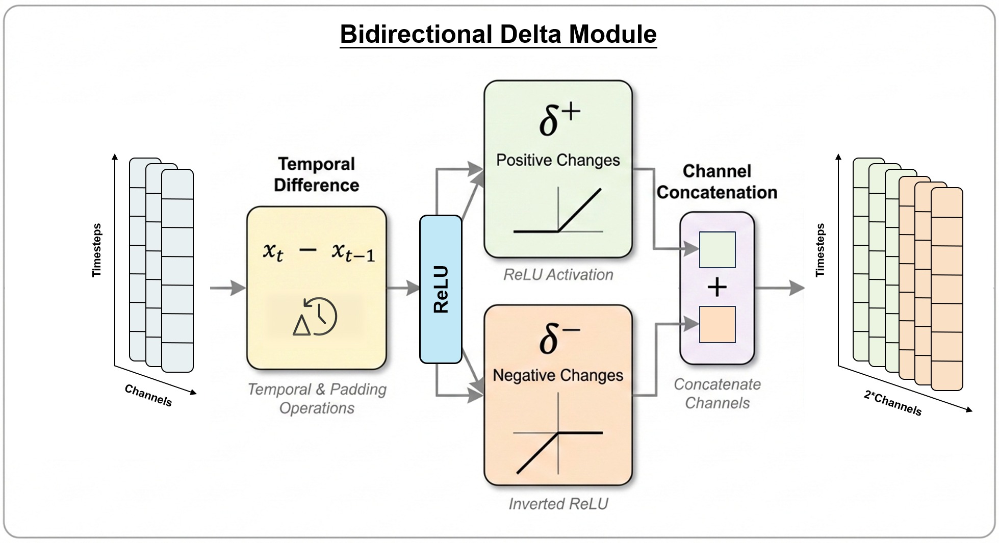
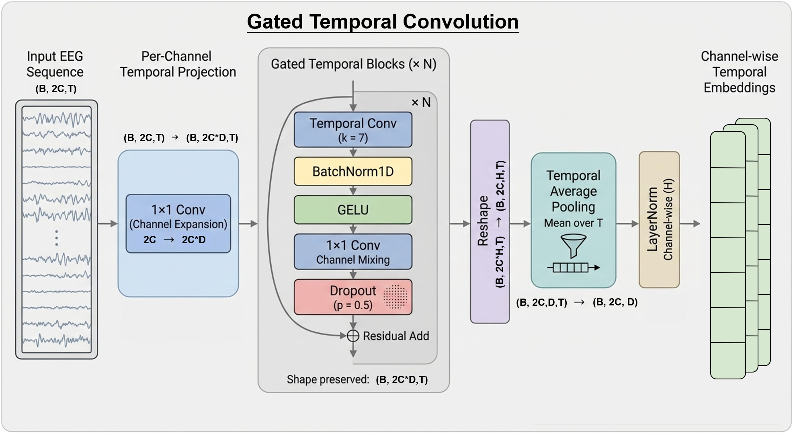
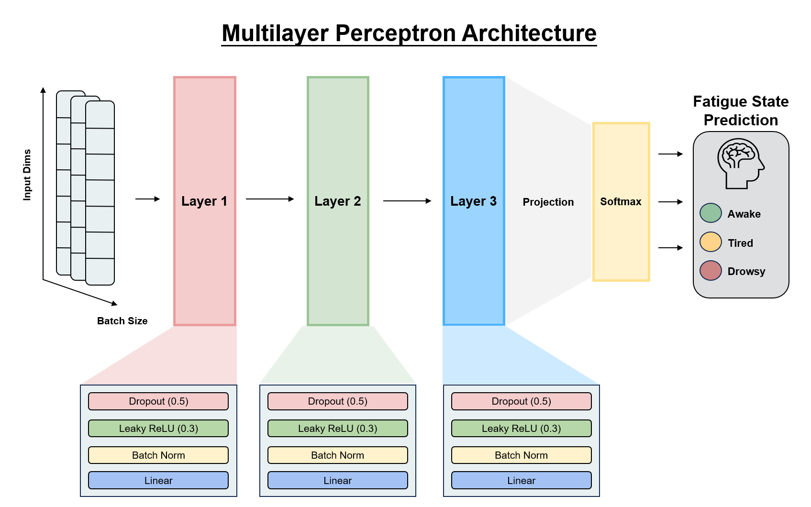

Directional Temporal Dynamics Modeling for EEG-based Driving Fatigue Recognition
Abstract
Driving fatigue is a major contributor to traffic accidents and poses a serious threat to road safety. Electroencephalography (EEG) provides a direct measurement of neural activity, yet EEG-based fatigue recognition is hindered by strong non-stationarity and asymmetric neural dynamics. To address these challenges, we propose DeltaGateNet, a novel framework that explicitly captures Bidirectional temporal dynamics for EEG-based driving fatigue recognition. Our key idea is to introduce a Bidirectional Delta module that decomposes first-order temporal differences into positive and negative components, enabling explicit modeling of asymmetric neural activation and suppression patterns. Furthermore, we design a Gated Temporal Convolution module to capture long-term temporal dependencies for each EEG channel using depthwise temporal convolutions and residual learning, preserving channel-wise specificity while enhancing temporal representation robustness. Extensive experiments conducted under both intra-subject and inter-subject evaluation settings on the public SEED-VIG and SADT driving fatigue datasets demonstrate that DeltaGateNet consistently outperforms existing methods. On SEED-VIG, DeltaGateNet achieves an intra-subject accuracy of 81.89% and an inter-subject accuracy of 55.55%. On the balanced SADT 2022 dataset, it attains intra-subject and inter-subject accuracies of 96.81% and 83.21%, respectively, while on the unbalanced SADT 2952 dataset, it achieves 96.84% intra-subject and 84.49% inter-subject accuracy. These results indicate that explicitly modeling Bidirectional temporal dynamics yields robust and generalizable performance under varying subject and class-distribution conditions.
Model Architecture

Overview of the proposed DeltaGateNet. DeltaGateNet is a simple structure that contains three main components. Stage one is the Bidirectional Delta module that computes the differential across timesteps. Stage two is a gated temporal convolution block that encodes temporal features and selects activation using a soft gating mechanism. In stage three, the encoded temporal feature maps are fed into the multilayer perceptron that produces three probabilities representing the predicted classes. Note that under most experimental settings and datasets, fatigue levels increase concurrently as time progresses, as subjects are more likely to grow tired towards the end of the experiment.

The Bidirectional Delta module computes a first-order temporal difference that approximates the differential of EEG data as fatigue is encoded in changes over time. The module leverages the ReLU activation function to separate the changes into positive and negative differentials to contain richer temporal information for further processing.

The Gated Temporal Convolution projects the differentials to a higher-dimensional latent space to extract deeper information and then performs a local temporal convolution that captures short-term EEG signals. A GELU activation and 1x1 depthwise convolution block are utilized to select significant features to pass through. Residual blocks are used to select which features of signals to amplify or diminish.

Multilayer Perceptron.
The Bidirectional Delta module computes a first-order temporal difference that approximates the differential of EEG data as fatigue is encoded in changes over time. The module leverages the ReLU activation function to separate the changes into positive and negative differentials to contain richer temporal information for further processing.
The Gated Temporal Convolution projects the differentials to a higher-dimensional latent space to extract deeper information and then performs a local temporal convolution that captures short-term EEG signals. A GELU activation and 1x1 depthwise convolution block are utilized to select significant features to pass through. Residual blocks are used to select which features of signals to amplify or diminish.
Multilayer Perceptron.
Results
The Bidirectional Delta module computes a first-order temporal difference that approximates the differential of EEG data as fatigue is encoded in changes over time. The module leverages the ReLU activation function to separate the changes into positive and negative differentials to contain richer temporal information for further processing.
The Gated Temporal Convolution projects the differentials to a higher-dimensional latent space to extract deeper information and then performs a local temporal convolution that captures short-term EEG signals. A GELU activation and 1x1 depthwise convolution block are utilized to select significant features to pass through. Residual blocks are used to select which features of signals to amplify or diminish.
Multilayer Perceptron.
The Bidirectional Delta module computes a first-order temporal difference that approximates the differential of EEG data as fatigue is encoded in changes over time. The module leverages the ReLU activation function to separate the changes into positive and negative differentials to contain richer temporal information for further processing.
The Gated Temporal Convolution projects the differentials to a higher-dimensional latent space to extract deeper information and then performs a local temporal convolution that captures short-term EEG signals. A GELU activation and 1x1 depthwise convolution block are utilized to select significant features to pass through. Residual blocks are used to select which features of signals to amplify or diminish.
Multilayer Perceptron.
BibTeX
@article{YourPaperKey2024,
title={Your Paper Title Here},
author={First Author and Second Author and Third Author},
journal={Conference/Journal Name},
year={2024},
url={https://your-domain.com/your-project-page}
}